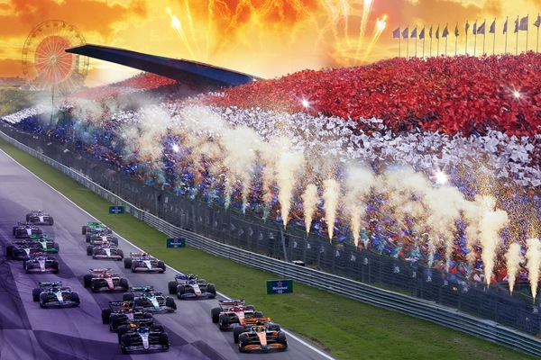
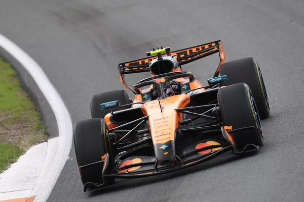

The Dutch Grand Prix is a Formula 1 race held at Circuit Zandvoort in the Netherlands. The track is located near the North Sea and is known for being narrow and challenging. It includes steeply banked turns that make racing more exciting. Drivers must be very precise because passing can be difficult at Zandvoort.

The Dutch Grand Prix has a passionate crowd, especially because Dutch driver Max Verstappen is a fan favorite. Many fans wear orange to support him and the Netherlands. The race returned to the Formula 1 calendar in 2021 after many years away. It is now one of the most energetic and popular races of the season.
Things To Look Out For Ahead Of The Race:
- The Dutch Grand Prix is held at Circuit Zandvoort, a fast, narrow track right next to the North Sea in the Netherlands.
- Max Verstappen is the hometown favorite, so the race usually has huge crowds of Red Bull fans.
- Zandvoort is known for its steeply banked corners, especially Turns 3 and 14, which make it feel different from most Formula 1 tracks.

Starting 3 Drivers:
| Driver | Team | Grid Position |
|---|---|---|
| Lando Norris | McLaren | 1st |
| George Russell | Mercedes | 2nd |
| Kimi Antonelli | Mercedes | 3rd |